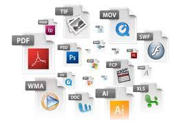
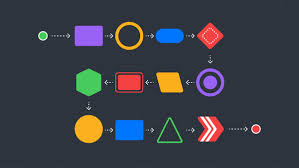

| Submódulo 3.Desarrollo y características de documentos electrónicos |
Integra comunidades virtuales con la intención de generar la interacción del estudiantado, utilizando software social y educativo
favoreciendo un ambiente de comunicación incluyente y ético dentro de su entorno personal, profesional y educativo.
Desarrolla habilidades para resolver problemas de operación en el equipo de cómputo, aplicando diferentes tipos de
mantenimiento, empleando diferentes conexiones para las redes de cómputo, trabajando con responsabilidad y tolerancia a la
frustración en los ámbitos organizacionales, educativos y de la vida cotidiana. Emplea las presentaciones electrónicas para expresarse
creativa mente. Plantea soluciones a problemas del entorno personal, académico y laboral mediante la creación presentaciones electrónicas que
le permita expresar una idea. |

| Submódulo 4.Comunidades virtuales |
Define diferentes tipos de redes y comunidades virtuales, tanto personales, laborales y escolares, para el intercambio de información y archivos multimedia en el ámbito laboral y profesional de manera ética y responsable.
Utiliza plataformas con actividades educativas innovadoras, así como comunidades virtuales, del ámbito escolar o profesional que favorezcan su
formación continua. |

| Submódulo 5.Mantenimiento y redes de computo |
Propone las características del equipo de cómputo, que
satisfacen las necesidades de diferentes usuarios al emplear diversas
configuraciones para un óptimo funcionamiento en el ámbito educativo, laboral y profesional, de forma innovadora y responsable.
Utiliza las herramientas del sistema operativo para resolver problemas con los medios de almacenamiento y la operación del sistema, trabajando de manera responsable y colaborativa en un contexto educativo, laboral o profesional. |
| Submódulo 6.Sistemas de información |
Plantea soluciones críticas y responsables mediante la metodología de desarrollo de software para demostrar eficiencia en el
manejo de base de datos y software de programación de alto nivel, que sean aplicables a necesidades de una empresa o institución para el tratamiento de información. |
| Submódulo 7.Programación |
Propone la creación de códigos con instrucciones secuenciales, condicionales y/o repetitivas, asumiendo la frustración como parte del proceso de aprendizaje, en la solución de problemas de su entorno. |

| Submódulo 8.Programación visual |
Crear entornos gráficos mediante el uso de códigos. Utiliza los elementos de programación para resolver un problema. |

| Submódulo 9.Paginas web |
Diseña páginas web, animaciones multimedia, imágenes digitales e impresas, para generar productos de comunicación y
publicidad en el ámbito laboral y comunitario, favoreciendo el desarrollo ético, creativo e intercultural del entorno. |
| Submódulo 10.Diseño digital |
Crea animaciones multimedia, favoreciendo un ambiente de tolerancia y creatividad, para expresar ideas que den solución a problemas de su entorno. Aplica el software de diseño editorial para realizar
estrategias creativas e innovadoras, en la transmisión de ideas, favoreciendo su creatividad en un ambiente ético y responsable dentro de
su contexto. |
| Submódulo 11.Programación de aplicaciones de equipos móviles |
Identifica la diferencia entre una aplicación móvil y un
programa de escritorio. Muestra las ventajas de la creación de una aplicación móvil. Elabora una aplicación móvil mediante las herramientas
tecnológicas disponibles. |